No matching procedure. Try a different word.
01 How to use this guide
- Ask the test coordinator for the correct portal link and your own test account. Confirm whether payments use the bank’s UAT environment before making a test payment.
- Find the chapter for your role. Each procedure gives the menu/page, numbered actions, the expected result, and a suggested test.
- Use a unique company CR and tender reference for each test run. Keep the same reference when handing work to the next role.
- Record results in the supplied TEST_CHECKLIST.csv. Report a failure with the page, reference, time, exact message and a screenshot.
The team can follow one complete vendor-to-tender test and identify the step where a problem occurs.
Remember: Edition 1 • 5 October 2026 • English. This guide follows the current local application. Screenshots use sample accounts and records in an isolated test copy. They illustrate screens and states; they do not prove a real payment, SMS or email was delivered. Your live company names, fees, document types, permissions and dates may differ. Create and Edit Tender use the same six-step layout. No application changes are part of this guide.
02 Who does what
- Prepare separate accounts for the administrator, procurement user, procurement manager, department requester, department manager, finance reviewer, technical evaluator and commercial evaluator.
- Prepare three different committee users: Chairman, Secretary and Member. Assign them to the tender; one shared account cannot replace all three confirmations.
- Prepare at least two vendor companies: one successful bidder and one unsuccessful bidder. Add a third invited vendor who does not bid to check recipient boundaries.
- Give each person the relevant role permission and company/department assignment. Menu visibility follows those permissions and assignments.
Every handover goes to the correct person and company.
| Role | Main work |
|---|---|
| Administrator | Vendor master data, staff accounts/assignments, registration review and accounting permissions |
| Vendor owner | Own CR profile, contacts, registration/payment and tender participation |
| Vendor editor / bidder / viewer | CR-specific access according to the assigned portal role |
| Department requester / manager | Request creation and department approval |
| Finance / Committee request reviewer | Finance verification and committee request approval |
| Procurement / Procurement Manager | Tender preparation, approval, publication, changes, correspondence and final award |
| Chairman / Secretary / Member | Own opening code confirmation, opened bid review and digital signature |
| Technical / Commercial evaluator | Stage-specific bid review, findings and questions through procurement |
03 Sign in, OTP and choose a CR
- Enter your registered email and your own password. A vendor can enter the registered CR instead of email; the password must belong to an authorised user of that CR.
- Click Sign in. If OTP is required for your account, enter the current code delivered to your configured SMS or email destination and confirm it.
- If your email is linked to several vendor CRs, choose the company/CR you want to work with and continue. With one eligible CR, the portal selects it directly.
- Check the company name and CR shown at the top of the Vendor Workspace. Use Switch CR to change company when you have several memberships.
- Use Forgot password? if needed. If the OTP destination is missing or incorrect, ask the administrator to correct your account details.
The correct staff workspace or vendor CR opens only after the required authentication.
Remember: Login OTP and the tender’s three opening codes are different. Never use a committee opening code as a sign-in OTP. A CR identifies a company; it does not grant access to a person who is not linked to that company.
Team test: Try email and CR login; test a shared email with two CRs; confirm another vendor’s CR cannot be opened.
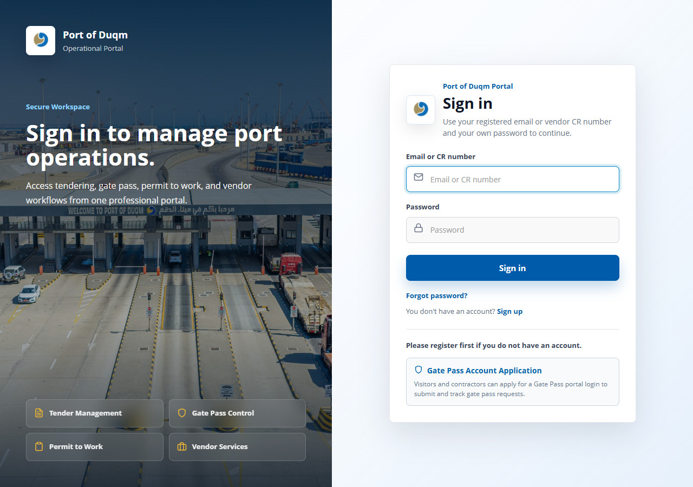
04 Switch between your vendor companies
- Click Switch CR near the company/CR badge.
- Read each company name and CR before selecting a radio option.
- Continue and check the badge again before adding documents, answering a tender or making a payment.
- Repeat with your second CR. Each company keeps its own profile, fee history and tender invitations.
All actions apply to the selected CR.
Team test: Invite one CR to a closed tender; switch to another CR and confirm that invitation does not transfer.
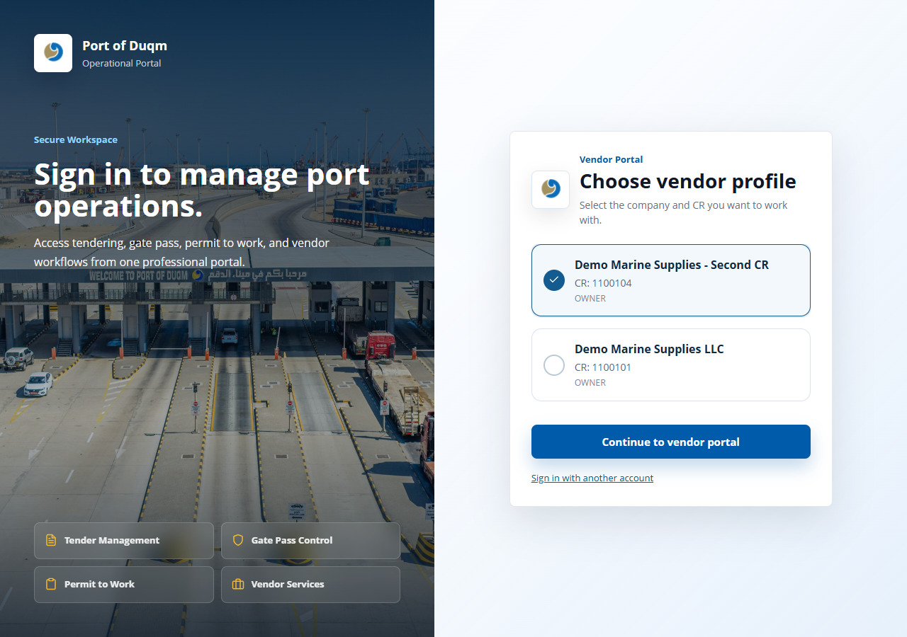
05 Create staff users and assign tender responsibilities
- Open the relevant Tender Users page: Department, Department Manager, Finance, Committee, Procurement, Procurement Manager, Technical or Commercial Users.
- Add the person’s name and registered email. Enter the initial password when creating a new login and the correct phone/OTP details where available.
- Choose the correct company; add the department for department-based roles. Keep the assignment Active.
- Save. Confirm the user appears in the relevant role master and can see the expected inbox when signing in.
- When editing other details, leave password fields empty to retain the existing password. Fill them only when intentionally changing it.
Assigned active users are available in tender team selectors and their own inboxes.
Remember: A general staff account alone does not guarantee inclusion in a tender team. The correct role-master assignment and the required permissions must also exist. The account’s configured OTP delivery method applies at sign-in.
Team test: Create a technical user in the correct company; confirm selection is available. Check a user assigned to a different company is excluded.
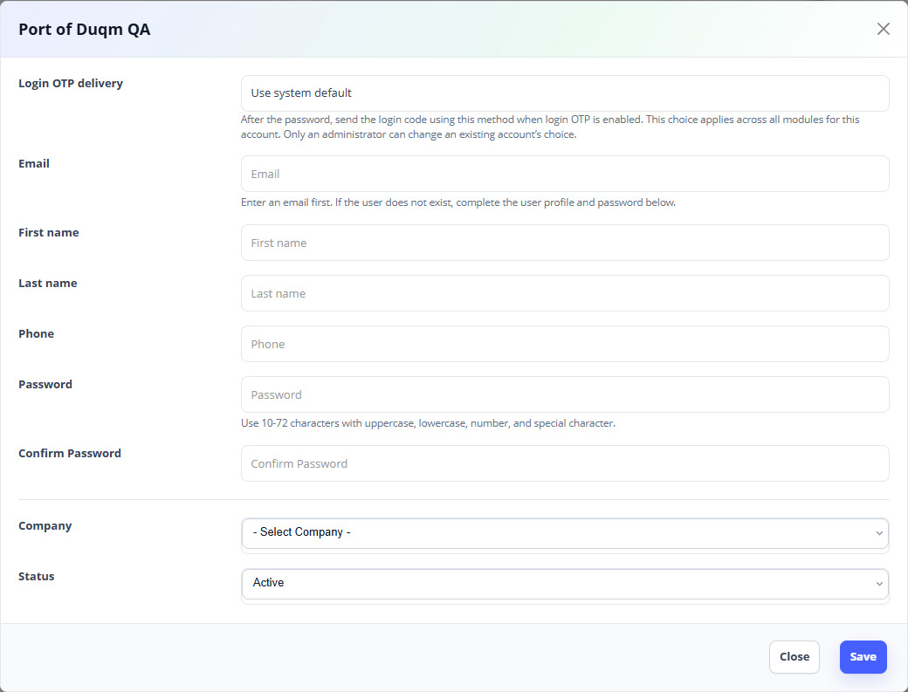
06 Set vendor groups and registration fees
- Click Add or edit an existing vendor group.
- Enter Name and Code, then the Default validity days for the registration period.
- Set Registration fee in the displayed currency. A positive amount requires payment. A zero fee follows the waiver review process.
- For waived groups, ensure Riyadha is configured and applicable. A waived registration requires a Riyadha certificate even if the general checkbox is not selected.
- Keep the group Active and save. Check the fee summary shown when an applicant selects that group.
Applicants see the fee and document rules for the selected group.
Remember: The OMR amounts in screenshots are demonstration amounts. Use the organisation’s authorised rates. Do not assume changing a group price rewrites an existing paid transaction.
Team test: Check one paid group and one zero-fee group. Confirm the zero-fee applicant is pending review, not automatically registered.
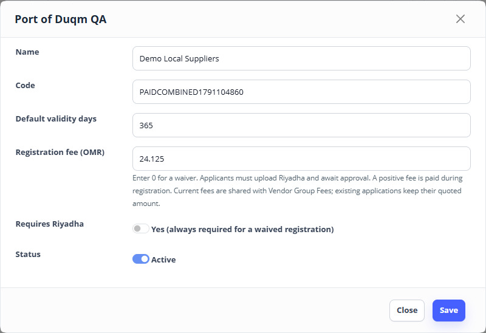
07 Maintain effective vendor fee records
- Open the fee list and choose Add or edit the relevant group’s fee record.
- Select the vendor group and Fee Type: Registration Fee or Renewal Fee. Enter the amount/currency and Active From / Active To dates shown by the form.
- Make the fee record active for the intended period, then save.
- Select that group in a sample registration and confirm the application’s displayed quote before payment.
Registration/renewal uses the applicable configured fee record and displays the payable amount.
Remember: Coordinate changes to active fee periods with the administrator. The applicant should pay the server’s displayed quote; entering an amount in the browser does not set the fee.
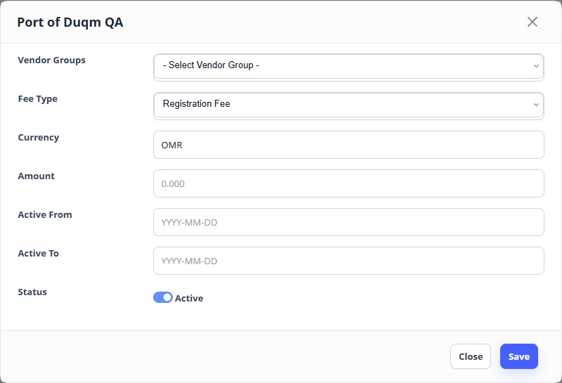
08 Set group-specific registration documents
- Click Add document type. Choose a vendor group, or the All vendor groups option when the type applies globally.
- Enter a clear Name and Code. Select Required for a mandatory upload and Active for a type currently in use.
- Save and repeat for each required type. Configure Riyadha Certificate for the applicable waived group.
- Open a sample registration, select the group and review the Documents section. Its mandatory types should appear as fixed upload rows.
- Change groups and check the refreshed requirements. Additional applicable documents remain optional unless the type is marked Required.
Required uploads follow the selected group and cannot be relabelled by the applicant.
Team test: Configure two required types for one group. Try submitting with one missing, then upload both. Check a different group gets its own types.
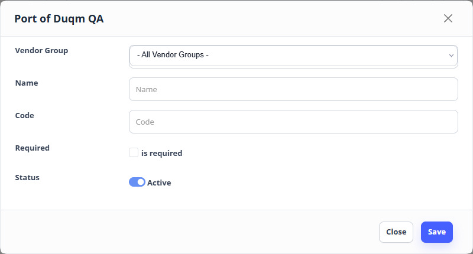
09 Maintain grades, categories and specialties
- Add/edit grade names, codes, ordering and active status in Vendor Grades.
- Maintain categories and subcategories used to describe supplier capabilities. Link each subcategory to its correct category.
- Review vendors’ submitted specialties before using them to target closed tenders.
- Use the Specialties Filter page to search vendors by their category/subcategory and related filters.
Procurement can use clear, maintained grades and specialty filters when selecting vendors.
Remember: Creating a grade or specialty definition does not automatically assign it to every vendor. Check each vendor’s approved details.
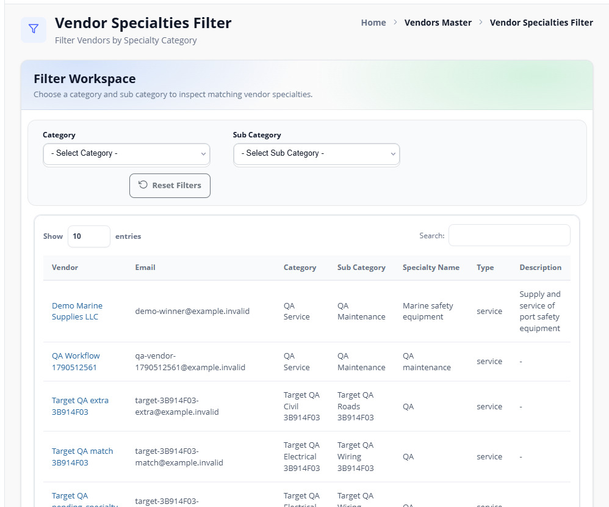
10 Open the registration page and enter company details
- Open the registration link supplied by the organisation. The sign-in page’s Vendor Registration button is currently hidden, so use the approved direct registration link.
- Choose the correct Vendor Group and read its registration fee summary.
- Enter the legal Vendor Name, company email and unique CR Number. Enter the telephone country code and number in the fields shown.
- Check VAT and other company details if applicable. Complete every field marked with an asterisk.
- Continue to Location, Account access and Documents using the section links.
The application identifies the company, its CR and the registration rules to apply.
Remember: The company email and the person’s account email serve different purposes. Check both. If an existing login email is reused, use that account’s existing password rather than creating a conflicting login.
Team test: Try a duplicate active CR and a new CR. Confirm the application rejects the duplicate with a clear message.
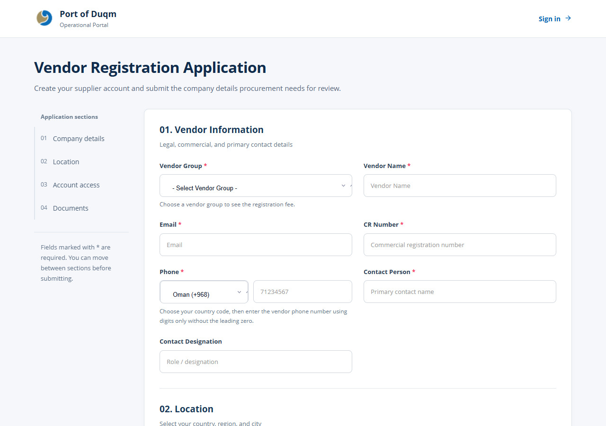
11 Enter the company location
- Select Country first.
- Select an available Region for that country, then a City for that region.
- Enter the company address and other applicable location details.
- If changing the country or region, reselect the dependent fields rather than leaving an old city selected.
The saved location belongs to the selected country and region.
Team test: Change country after selecting a region/city and confirm the form refreshes its dependent choices.
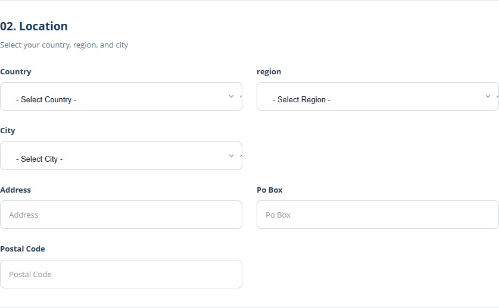
12 Create or reuse the applicant’s login
- Enter the applicant’s name and personal login email in Account access.
- Enter the applicant’s mobile number accurately, including the required country code. This is the person’s authentication destination when SMS OTP applies.
- For a new login, create a password and confirm it. For an existing email, enter its current password to link another CR to that identity.
- Check the applicant details before submitting; this person becomes the owner/contact for the new vendor CR.
The applicant has one verified login identity with a membership for this CR.
Remember: Do not use another person’s email or phone. An inactive or disabled existing account requires administrator action; public registration does not reactivate it automatically.
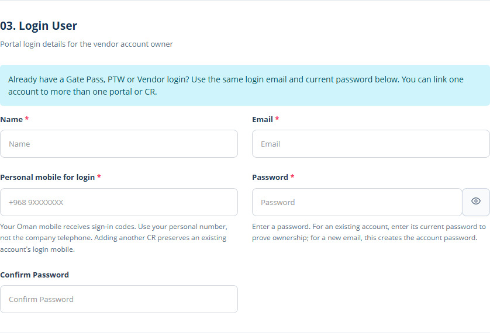
13 Upload the required registration documents
- Read the fee summary and the fixed required document rows generated for your selected group.
- Use Choose File for each required type. Upload a readable PDF or image in an allowed format.
- Enter issue and expiry dates where requested/applicable. Check that expiry is not earlier than issue.
- For a waived group, upload the Riyadha certificate as well as the other required documents.
- Use the additional document option for other applicable supporting files. Review requirements again if you change the group.
- Submit the registration and wait for the success/next-step message.
Required documents are saved against their correct types on the vendor’s Documents tab.
Team test: Omit one required document and check submission is refused. Upload it and confirm the registration can continue.
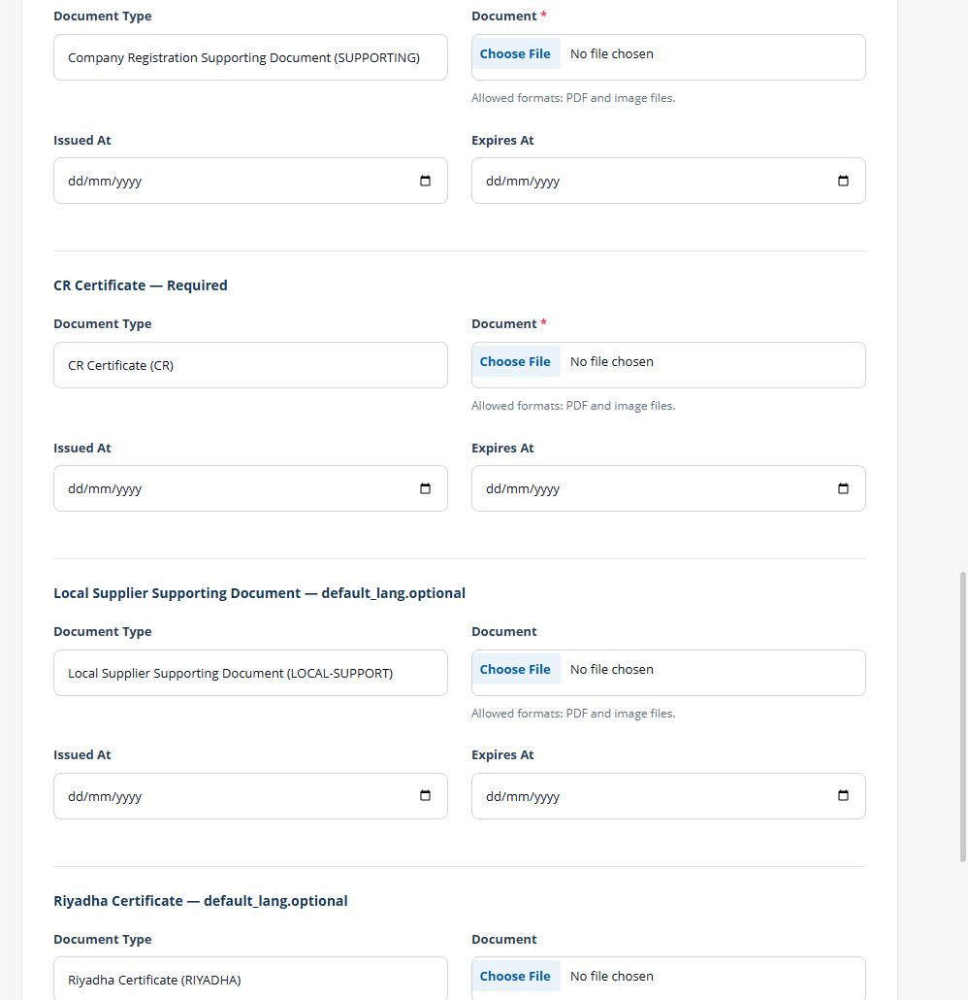
14 Pay a registration fee
- Sign in using the applicant’s email or CR and select the pending company if prompted.
- Read Registration payment required, the amount/currency and any Procurement message.
- Click Pay registration fee. Continue to Bank Muscat Smart Gateway and check the merchant amount before completing payment.
- Complete the bank’s authorised test/live payment and allow the browser to return to the portal.
- Check the application status and payment record. Registration completes after payment has been verified.
A verified successful payment activates registration for the correct CR; its transaction is recorded for accounting.
Remember: A cancelled or failed bank payment leaves registration pending. If money was charged but the portal is still pending, ask accounting to check the existing transaction/reference before starting another payment. Screenshots do not show or certify the bank-hosted checkout.
Team test: Run an approved successful payment and an approved cancellation. Check cancellation does not activate the vendor and repeated return does not duplicate the payment.
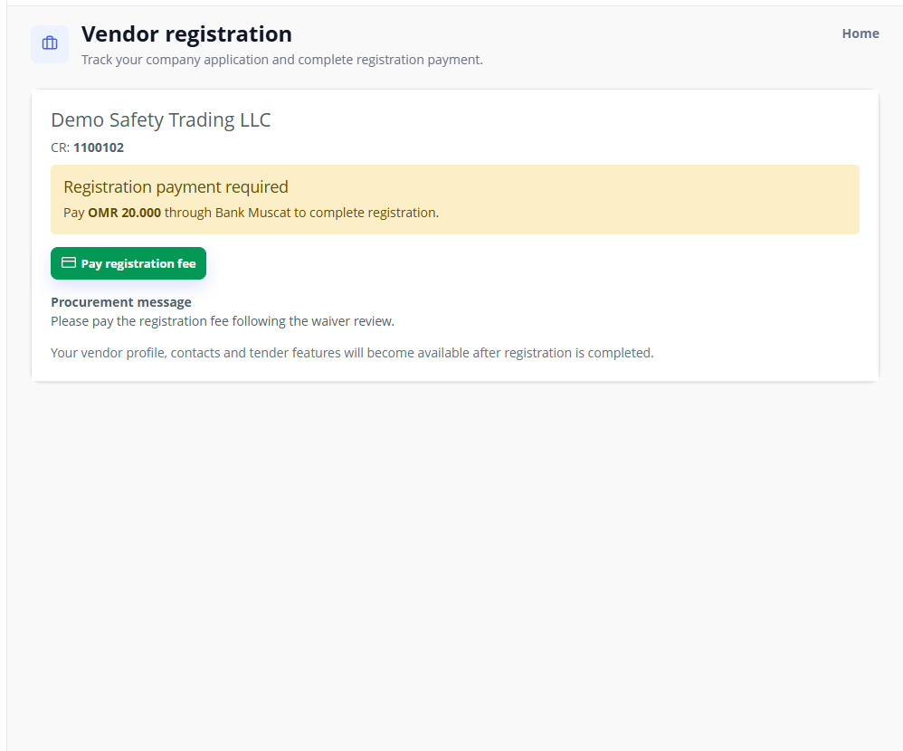
15 Wait for a waiver decision
- Submit the required documents, including Riyadha.
- Sign in and check Pending waiver approval for the selected CR.
- Wait for the registration reviewer to approve the waiver or request payment.
- If payment is requested, read the reason and amount and follow the registration payment procedure.
Profile, contacts and tenders stay restricted while waiver approval/payment is pending.
Team test: Confirm pending applicants can see status but cannot use full vendor features. Approve the waiver and confirm access becomes available.
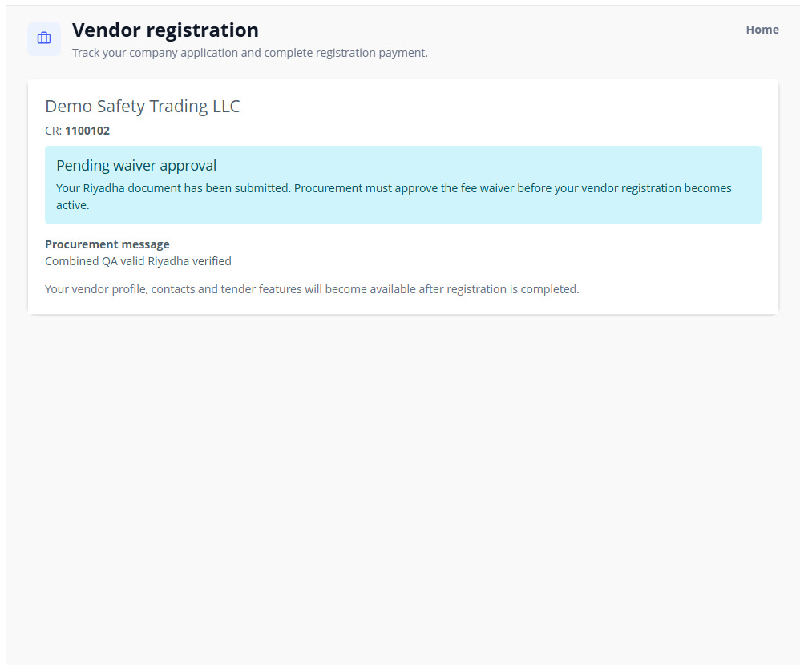
16 Review Riyadha and approve a waiver or require payment
- Open the vendor and confirm its name, CR, group and pending registration status.
- Open View Riyadha certificate and inspect the uploaded evidence.
- If eligible, select Approve waiver and register vendor. Add an explanatory note if needed and save the registration decision.
- If not eligible, select Require payment. Enter a positive amount in the displayed currency and a clear Reason / note to applicant.
- Save registration decision. The applicant can see the requirement and pay; verified settlement then completes registration.
The reviewer controls waiver approval or a specific payment requirement, with a saved reason.
Team test: Test the approval path and, using another applicant, the custom-payment path. Check zero/negative custom payment amounts cannot be accepted.
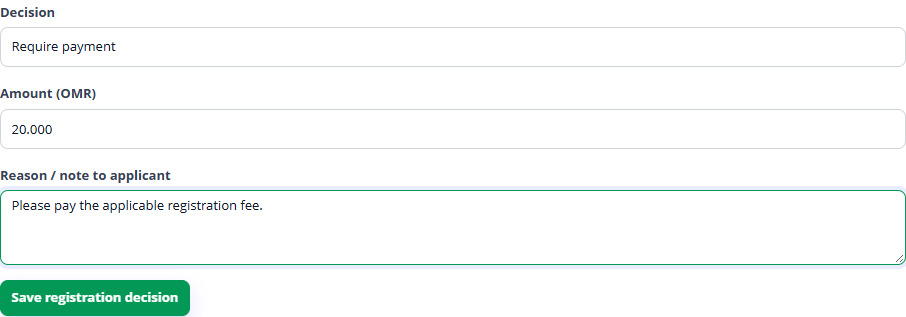
17 Read the Vendor Workspace and profile checklist
- Confirm the company name and CR at the top. Check registration start/expiry and current status.
- Review the Profile Checklist: Company profile, Primary contacts, Bank account, Specialties and Required documents.
- Use the tabs to complete each outstanding item and return to Overview.
- Review Document Expiry and replace documents that have expired or are approaching expiry.
The checklist explains what remains before procurement profile review.
Remember: Registration/payment completion and profile approval are separate checks. A registered company may still need a bank account, specialties and documents before submitting its completed profile.
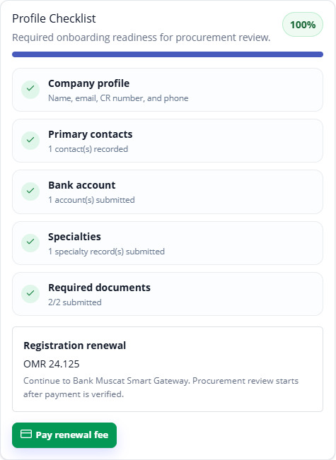
18 Add contacts and grant CR-specific portal access
- Click Add and enter contact Name, Designation, Email and Mobile.
- Choose Portal access: Viewer for read-only work, Bidder for tender participation, or Editor for profile editing and tenders.
- For a new login, enter and confirm the initial password. For an email with an existing login, its existing password is retained across linked CRs.
- Mark the contact Active and Primary when applicable, then save.
- Ask the contact to sign in with their own email/password and confirm the intended CR and permissions.
The contact is linked to this CR with the selected access, without overwriting an existing shared identity.
Remember: The free-text Role/Designation fields do not grant portal permissions. Use Portal access for that. Only an authorised owner can manage contact access; the contact form does not allow someone to assign themselves Owner.
Team test: Create Viewer, Bidder and Editor contacts. Confirm the viewer cannot edit or bid, and a linked multi-CR contact gets the CR selector.
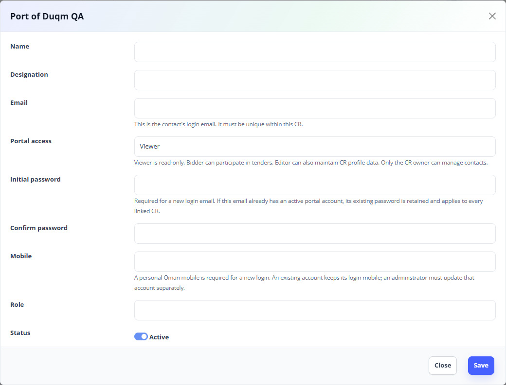
19 Edit or remove a contact and manage passwords
- Use the contact’s edit action to correct details or adjust the permitted portal access.
- Leave password fields empty when only editing other details.
- Use the available password/access action only for the contact records that permit it. Shared-account password changes affect the login for all linked CRs.
- Deactivate/remove a contact only when access should end for that CR. Recheck that the person can no longer select that membership.
- To change your own password, open Change Password and enter the current/new details requested by the form.
Contact details and CR access stay current; unrelated linked companies retain their own memberships.
Team test: Edit a phone/designation without re-entering a password. Remove one CR membership from a shared login and check its other valid CR remains accessible.
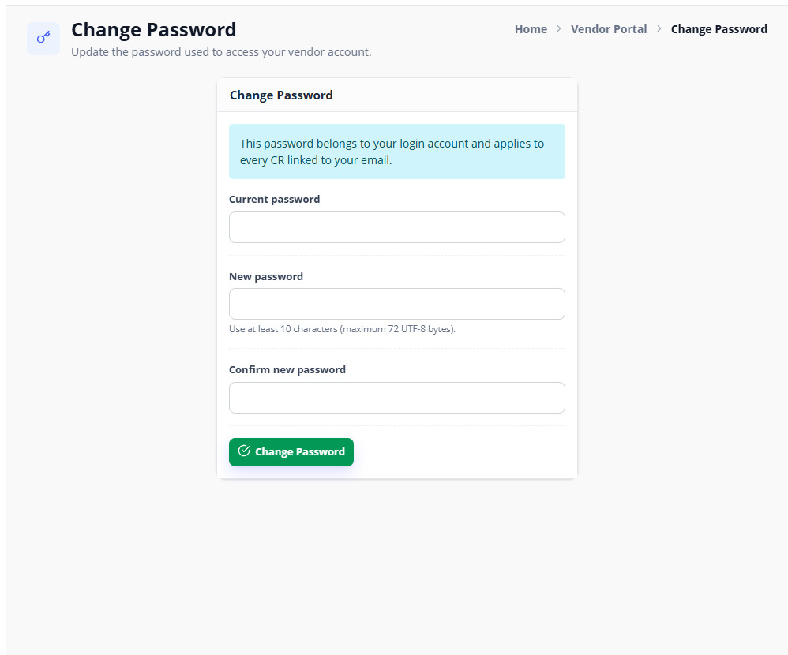
20 Add or update a bank account
- Enter the bank name, branch, account number, SWIFT and IBAN as applicable.
- Upload the bank letterhead/supporting document requested by the form.
- Review the details and save. Check the row’s review status.
- If rejected/returned, read the reviewer’s reason, correct the information and resubmit through the available edit action.
The bank details and supporting file are recorded and routed for review.
Remember: Saving a profile change may create a pending Vendor Update Request. It does not always make the change approved immediately.
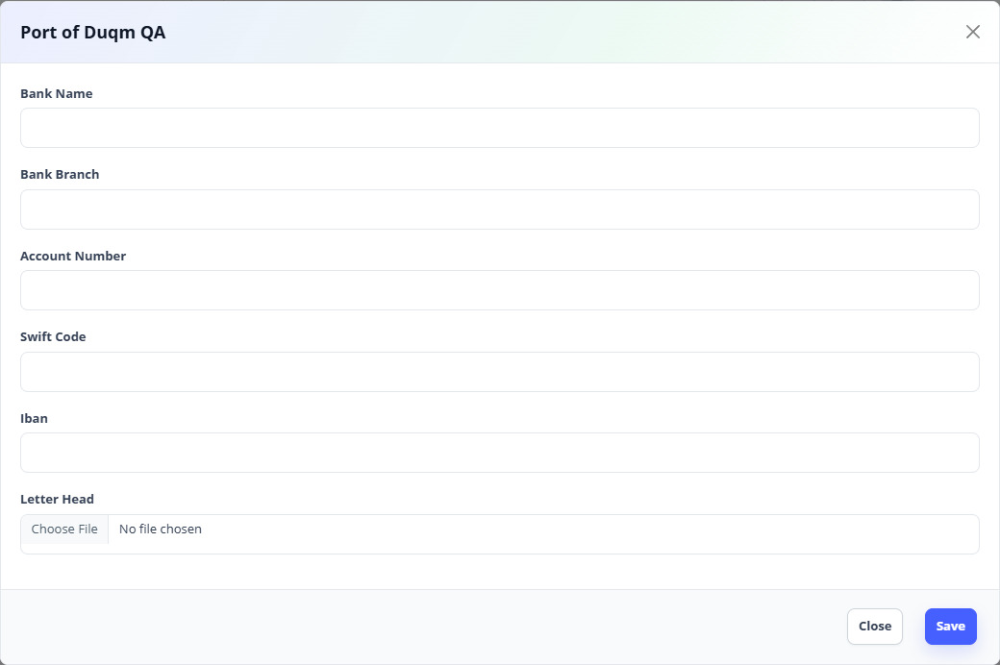
21 Maintain company branches
- Add the branch name and its contact/location details.
- Select country, then its region and city. Enter the branch address.
- Save and review the branch’s status. Use Edit for corrections and the removal action when appropriate.
Each branch is stored under the selected vendor CR.
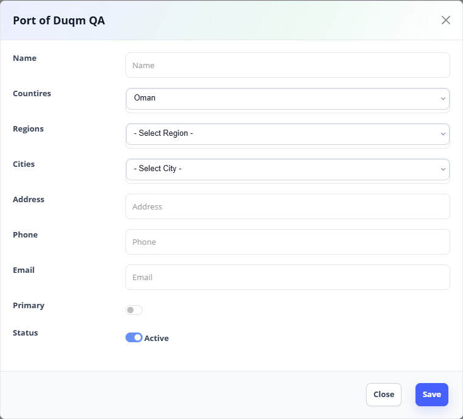
22 Maintain credentials
- Enter the credential details requested in the form, such as name/reference and relevant dates.
- Add any supporting information required by the displayed fields.
- Save, check its review status, and use Edit to correct it if the reviewer requests changes.
The company’s qualifications/credentials are available for review.
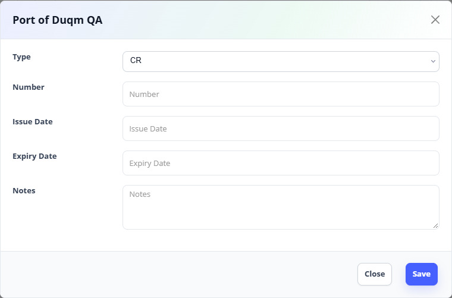
23 Maintain specialties
- Choose the relevant category and, where applicable, its subcategory.
- Enter Specialty type/name and a clear description of the services or supplies provided.
- Save and check the pending/approved status.
- Complete any requested correction. Approved specialties may be used for closed-tender targeting.
Procurement can identify the company’s capabilities accurately.
Team test: Check that a subcategory belongs to its selected category and a vendor with a different specialty is not included by that filter.
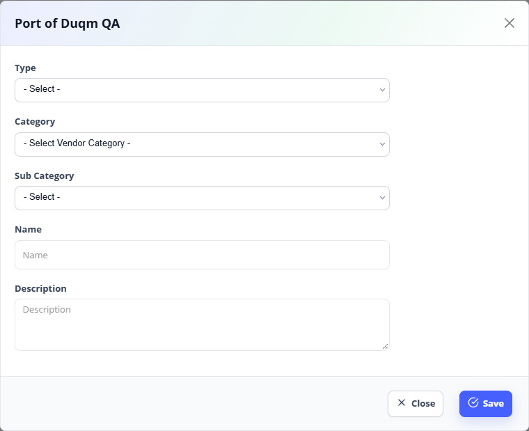
24 Upload, preview and replace vendor documents
- Choose an applicable Document Type and upload a readable allowed file.
- Enter issue/expiry dates where applicable and save.
- Use the document’s view/download action to confirm the correct file opens.
- Check its status and expiry label. Replace/correct an expired or rejected document through the available edit/upload action.
Documents remain attached to the correct vendor and type and can be reviewed by authorised users.
Team test: Open a new PDF and an image after uploading; confirm one vendor cannot open another vendor’s private document.
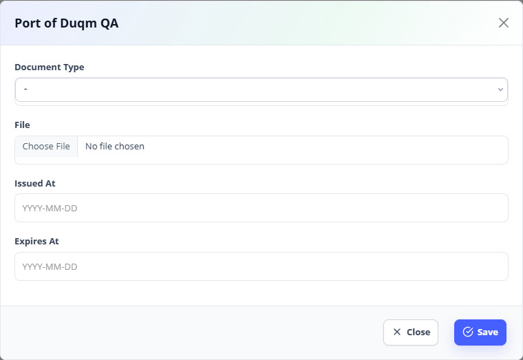
25 Submit a completed profile or a renewal
- Complete every checklist item. The review button remains disabled while required profile information is incomplete.
- Read the registration/renewal payment box and the current button label before continuing.
- Click the displayed review/payment/renewal action. Complete checkout if a fee is due.
- Return to the portal and check the pending review or registration-period result.
- For a revision of an already settled period, correct the requested information and resubmit; the same period’s recorded payment is retained.
The completed profile/renewal reaches the appropriate review state with its payment linked.
Remember: Renewal fees use the configured group fee and registration period. Do not treat the date displayed on a sample screenshot as your own expiry date.
26 Review vendor update requests
- Open the vendor and its pending requests. Inspect the section, changed details and supporting document.
- Compare the requested change with the current approved data.
- Approve a valid request, or reject/return it using the available action and a clear reason.
- Use bulk actions only after reviewing the selected pending requests individually.
- Confirm the vendor can see the decision and that approved data is applied to the correct CR.
Profile changes have an identifiable reviewer and decision; pending/locked sections are not silently overwritten.
Team test: Approve a bank/document change, reject another and check both vendor-visible statuses. Repeating a decision should not apply a second change.
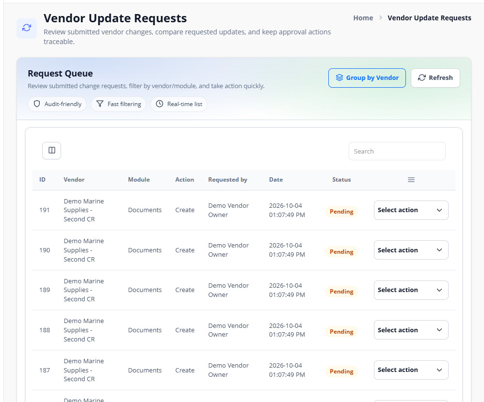
27 Review a vendor, set a grade and assign its code
- Open the vendor and inspect registration, documents, contacts, bank details, branches, credentials and specialties.
- Use the allowed status/grade action to record the review outcome.
- For a fully registered vendor, open Edit and enter the optional Vendor Code text field.
- Save and check the code on the vendor details. A second CR has its own vendor record/code.
The reviewed vendor has the intended status, grade and company-specific code.
Remember: Vendor Code is an administrative identifier. Vendor sign-in still uses the registered email or CR and the person’s password.
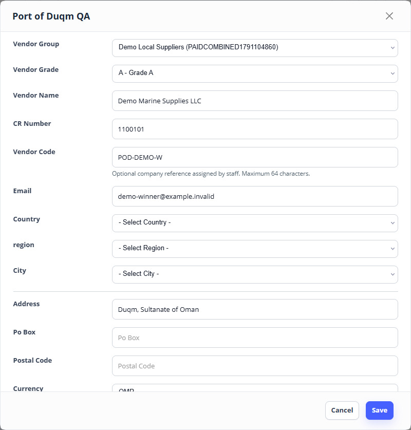
28 Block, unblock or remove vendor access
- Confirm the CR and current status before using a block/suspension/removal action.
- For a block, enter the required reason and confirm the action.
- Check that the company’s restricted status is visible and its tender actions are unavailable where the workflow requires active approval.
- Use Unblock only after resolving the issue; complete any payable unblock requirement shown by the system before expecting access to be restored.
- Use removal only for the intended test record. Do not use removal to correct a payment or tender result.
Access follows the company’s approved/blocked status and the saved reason.
Team test: Block a designated test CR and verify its restrictions; unblock it and confirm the expected restored state.
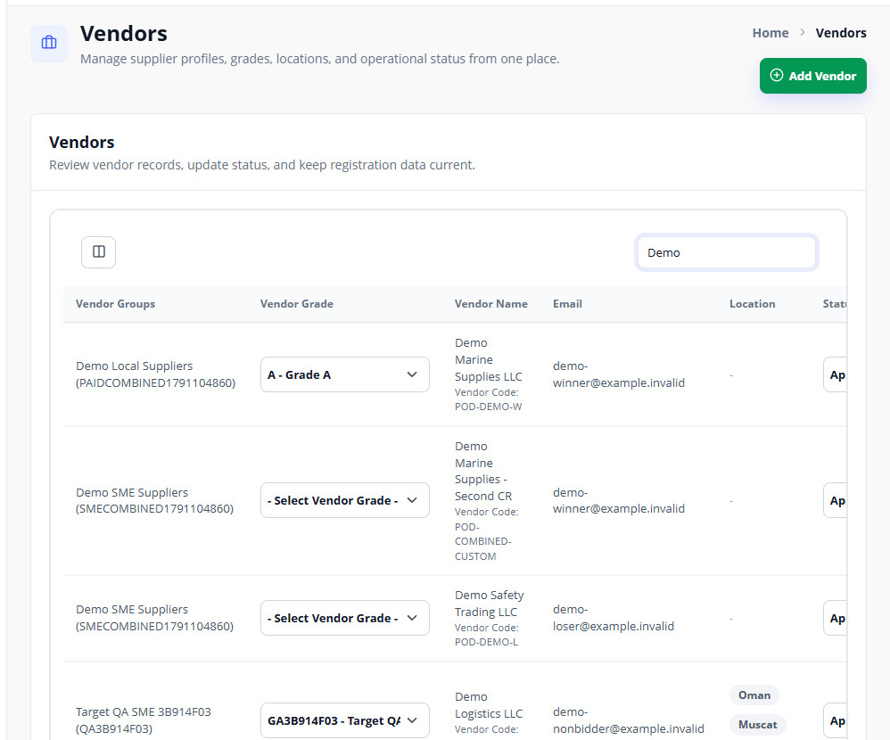
29 Check vendor payments and accounting records
- Search by the vendor/CR, transaction reference or available status/date filters.
- Open the transaction details and read who paid, the payment purpose, amount, currency, status and bank references.
- Compare the application transaction reference with the bank’s tracking/reference information.
- Use the available recheck/export actions when appropriate. Review a charged-but-pending payment before asking the applicant to retry.
Accounting can cross-reference registration, renewal and other vendor fee transactions.
Remember: A created payment record is not the same as a verified success. Read the status and outcome. Card information is displayed only when returned by the gateway, with sensitive details masked.
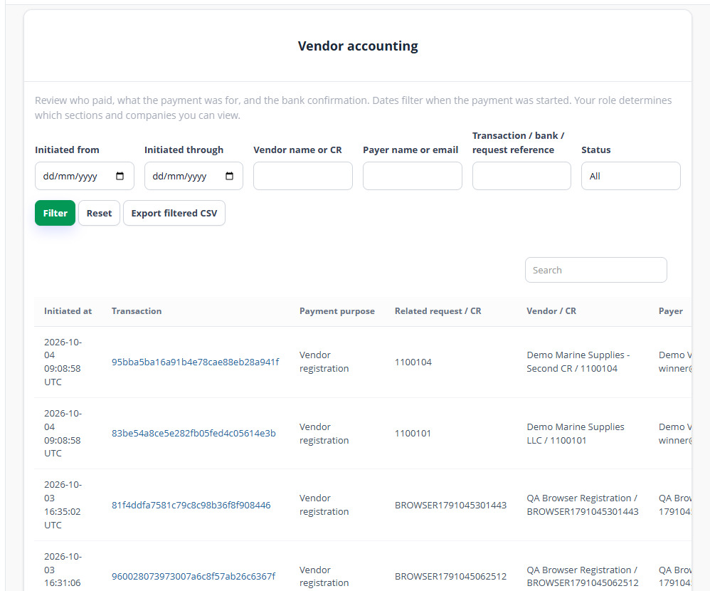
30 Understand the two starting routes
- Use the Department Request route when a department initiates the requirement: Requester → Department Manager → Finance → Committee request approval → Procurement tender creation.
- Use New Tender in Procurement Inbox when procurement starts a tender directly.
- Both routes still require the tender’s Procurement Manager approval before publication.
- Read Request Source, Tender Status, Manager Approval and Workflow Stage separately in the inbox/register.
The team knows which approvals belong to the request and which belong to the tender.
Remember: Request Source “Direct” identifies how the tender started. It does not mean manager approval was skipped. A department request’s “Manager approved” status is different from the tender’s Procurement Manager decision.
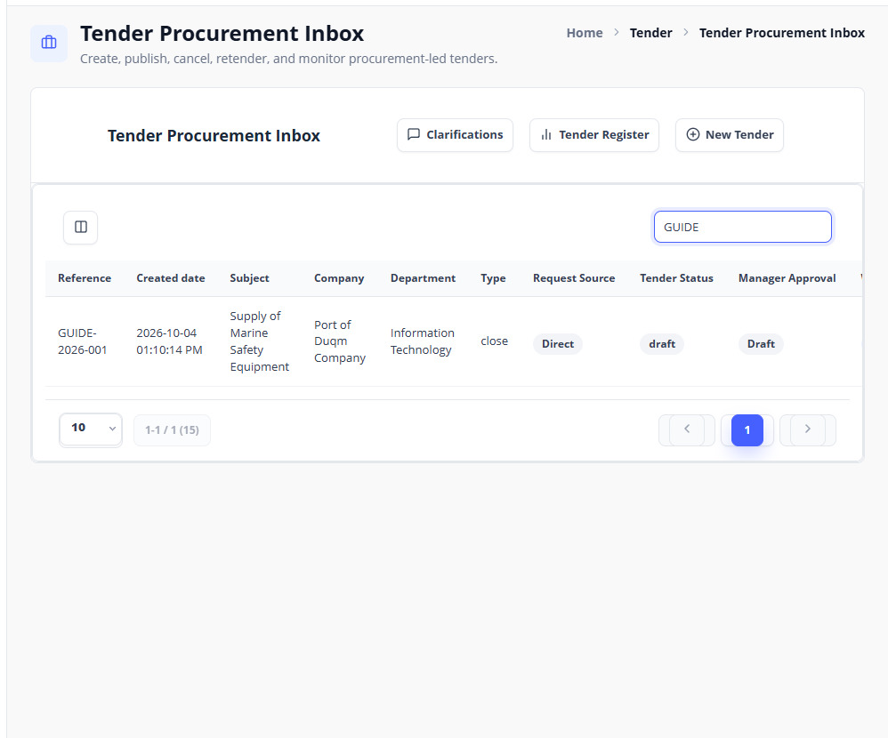
31 Create a department tender request
- Enter the reference, subject, description, request date, budget and other required request details.
- Check the company/department and configured Department Manager.
- Choose the tender type and evaluation method/weights. Select the proposed technical and commercial users and three different committee people.
- Add suggested vendors and other applicable details shown by the form.
- Save the draft. Use the Submit action on its row when ready; saving alone does not submit the request.
The request becomes Submitted and is available to its assigned Department Manager.
Team test: Save a draft, confirm it is not in the manager’s actionable queue, then Submit and confirm the handover.
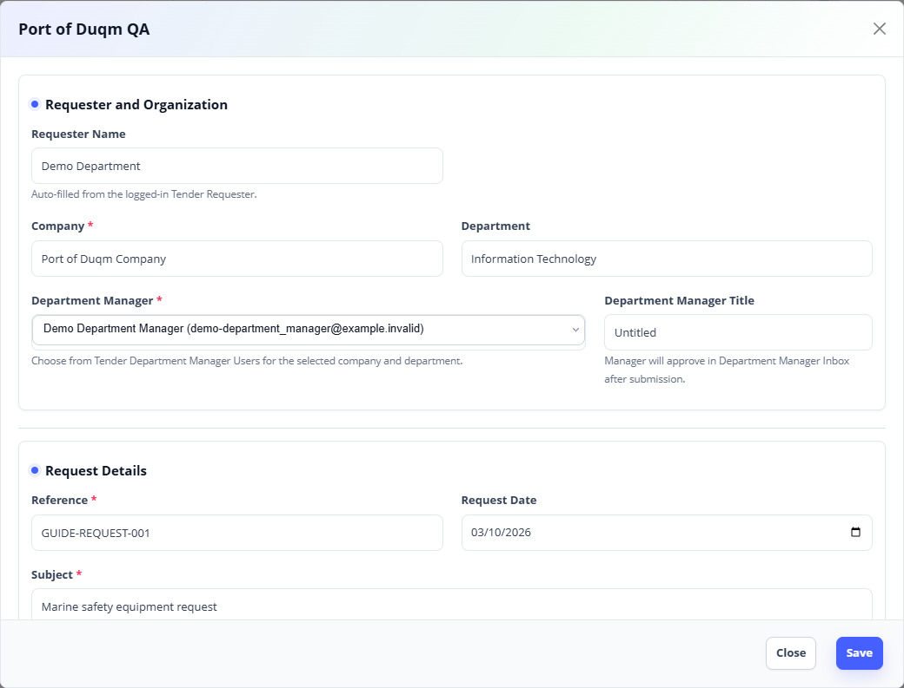
32 Approve or reject the department request
- Open the submitted request and review the requirement, budget, teams and suggested vendors.
- Approve if it is ready. Use Reject with a clear comment if it needs correction.
- Confirm the decision. An approved request becomes Manager approved for Finance verification.
- For rejection, the requester should read the reason, edit the request and submit it again.
Only a submitted request is decided by its authorised Department Manager.
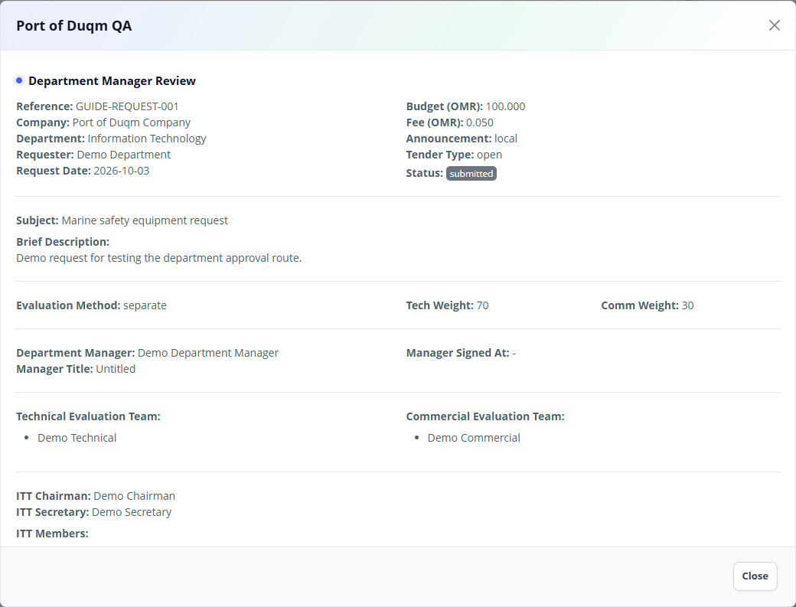
33 Verify the request in Finance
- Open the Department Manager approved request.
- Review its budget, requirement and approval history.
- Use the Finance verification/approve action to continue, or Reject with a reason.
- Check that an approved request becomes Finance verified and reaches Committee request review.
Finance records a verification decision before committee request approval.
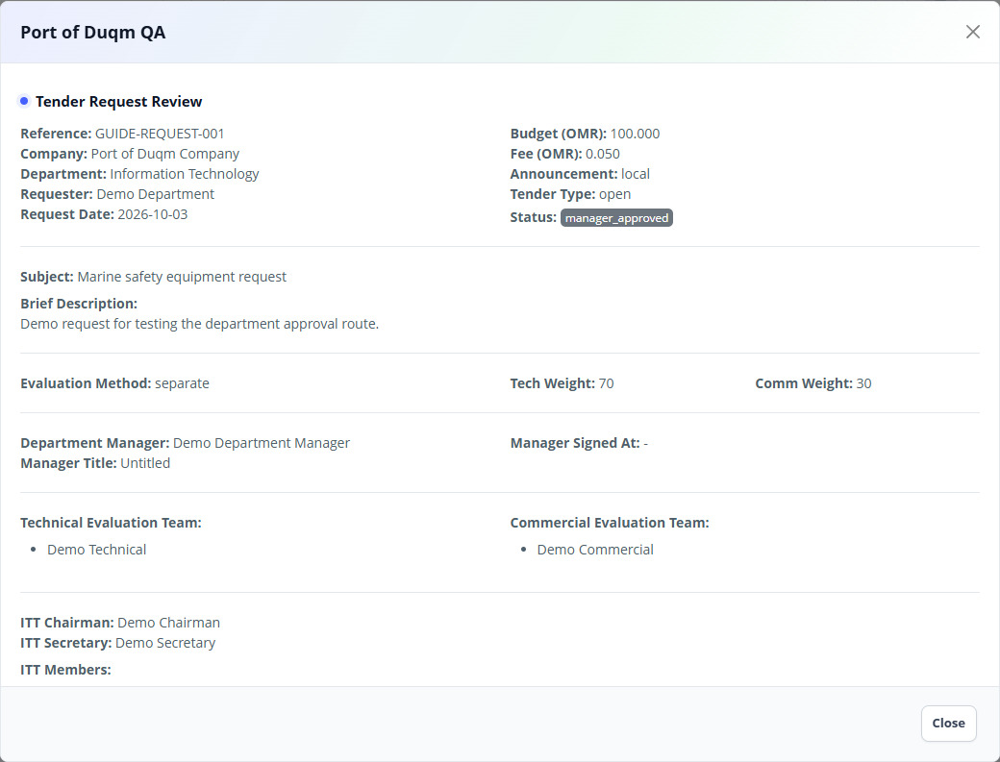
34 Approve the request in Committee
- Open the Finance verified request.
- Review the requirement, proposed teams/vendors and previous approvals.
- Approve it, or reject it with a reason for correction.
- Check that approved requests become Committee approved and are available to procurement for tender preparation.
The approved department request can be converted into a procurement tender.
Remember: Committee approval of a department request is separate from the later three-key Bid Opening process.
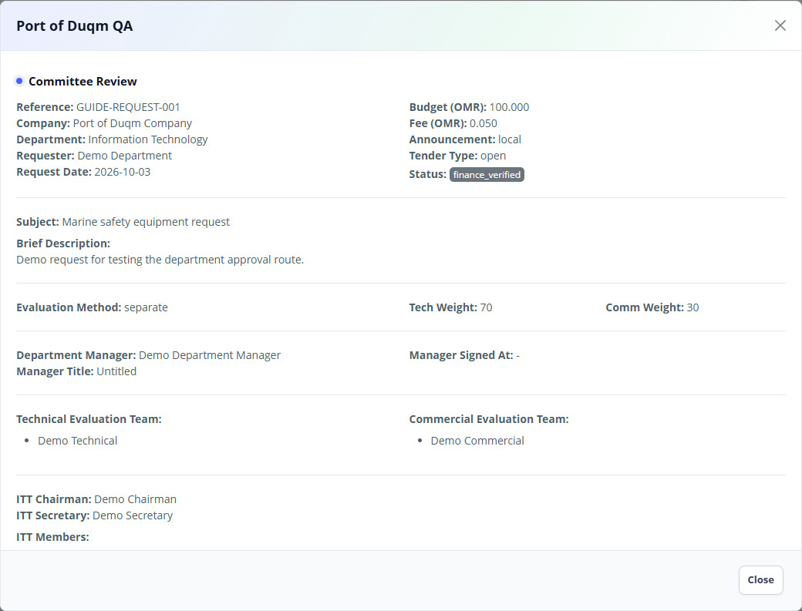
35 Start the tender from a request or directly
- For a direct tender, click New Tender.
- For an approved department request, use its available create/convert tender action; check the Linked request reference on the tender form.
- Complete all six setup steps: Tender Details, Milestones, Team Assignment, Target Vendors, Documents, Preview.
- Use Next/Previous or the step tabs to review the entire form before saving.
A procurement draft contains the correct source and complete tender setup.
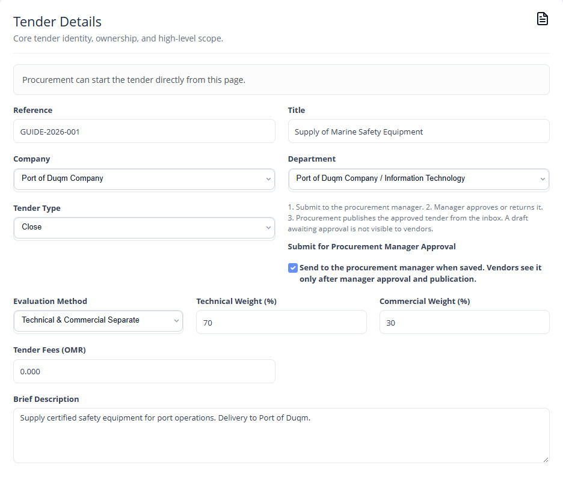
36 Step 1 — tender details, method and fees
- Enter a unique Reference and a clear Title. Select Company and Department.
- Choose Open for the open invitation route or Closed for a targeted vendor audience.
- Choose the displayed Evaluation Method. Set Technical Weight and Commercial Weight; together they must equal 100%.
- Enter Tender Fees in OMR. Zero means no tender fee; a positive amount creates the vendor fee requirement.
- Write a clear Brief Description. Leave Submit for Procurement Manager Approval selected when ready for review.
The tender’s identity, audience type, evaluation weighting and fee are explicit.
Remember: Open means eligible portal vendors can see the published tender. It does not mean draft tenders or sealed bids are public, or that an unauthorised login can submit.
37 Step 2 — set all tender dates
- Enter the Tender Release date/time and Last Date of Document Purchase.
- Enter Site Visit date/time when applicable, its Location, Mandatory attendance setting and Site Visit Instructions.
- Set Clarification Submission Deadline and Tender Submission Deadline.
- Set Bid Opening after submission closing. Set Technical Evaluation after bid opening and Commercial Evaluation after the technical deadline.
- Check all dates and times in order. Friday and Saturday cannot be used for tender milestones.
The schedule is valid and defines when each user action is available.
Remember: Use the portal’s configured local time; this application’s tender date handling uses Asia/Muscat. Enter a time as well as a date. A future release date does not open bidding immediately. If the closing date moves and later dates shift automatically, review every resulting field before saving.
Team test: Try opening before closing, equal opening/closing time, a Friday milestone and weights not totalling 100. Confirm invalid values are refused.
| Milestone | Meaning / relation |
|---|---|
| Release | Starts the published tender’s availability period |
| Document purchase deadline | Last time for required tender fee/document purchase; on or before submission closing |
| Site visit | Visit arrangements; on or before closing |
| Clarification deadline | Ordinary vendor question cutoff; on or before closing |
| Submission deadline | Last time to submit/update a bid |
| Bid opening | Must be later than submission closing |
| Technical evaluation deadline | Must follow closing/opening |
| Commercial evaluation deadline | Must follow the technical deadline |
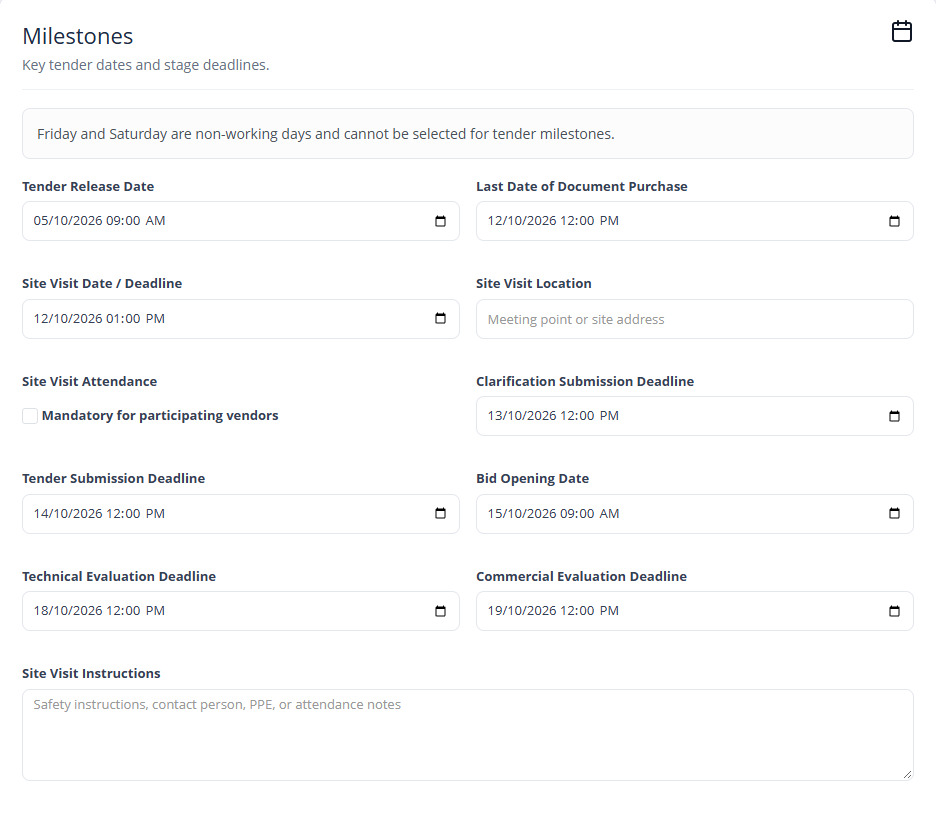
38 Step 3 — assign evaluators and opening members
- Select the Technical Evaluation Team from the correct company’s active technical users.
- Select the Commercial Evaluation Team from that company’s active commercial users.
- Select one Chairman and one Secretary.
- Select at least one separate ITC Member. Chairman, Secretary and the confirming Member must be different people.
- Confirm each person can sign in and has the correct role-master assignment before sending the tender for approval.
Each stage reaches its assigned users and three different roles can unlock bids.
Team test: Choose the same person for two opening roles and check the form refuses it; verify all three assigned accounts see the correct tender.
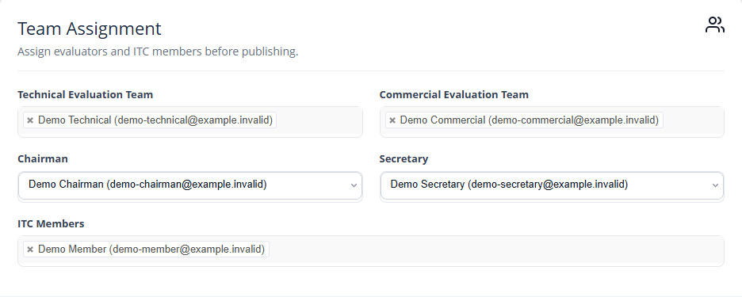
39 Step 4 — choose a flexible closed-tender audience
- For a closed tender, choose the combined/flexible targeting option shown by the form.
- Select any required Vendor Group, Vendor Grade, Category and Subcategory/specialties.
- All selected filters match together. For example, SME + Grade A + the chosen specialty selects vendors meeting all three.
- Use Select Vendors to add named extra vendors. They are included in addition to the filter matches, even if they do not match those filters.
- Review the audience preview/count and selected vendors. Remove any unintended extra invitee before saving.
Only the intended eligible CRs can see the closed tender when published.
Remember: An invitation is attached to the vendor CR, not every company belonging to a shared email login. Recheck the audience after changing groups/grades/specialties.
Team test: Use one vendor matching all filters, one matching only some, one named extra and one unrelated vendor; confirm their visibility independently.
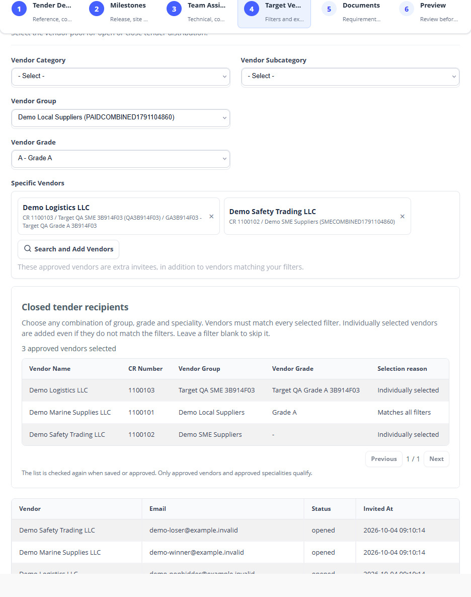
40 Step 5 — required proposals and item pricing
- Select the bid sections required from vendors: Technical Proposal, Commercial With Price, Commercial Without Price and Bank Guarantee as applicable.
- Complete the Tender Details fields such as PR No, delivery location, INCOTERM, required-on date, terms reference, notes and enclosures.
- Add the Schedule Rate items: serial number, description, UOM, quantity and optional Part No.
- Review quantities and descriptions. Vendors enter their own unit prices when item pricing is configured.
Bidders know which files and priced items are required.
Team test: Submit a bid with a missing required section and confirm it is refused. Check item quantities and computed line totals.
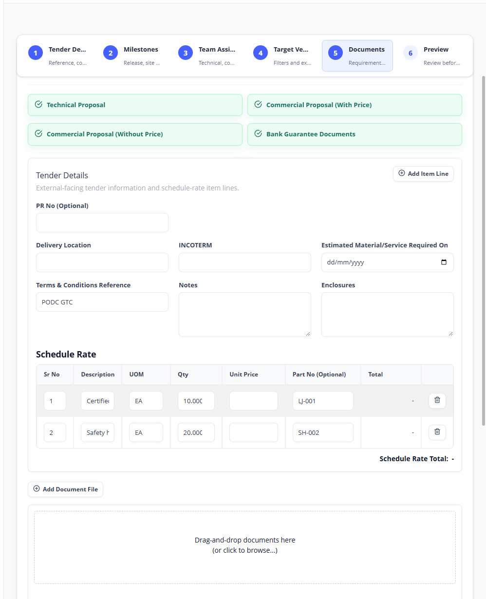
41 Upload tender documents and control download access
- Click Add Document File and select the specification or other tender attachment.
- Enter its title/type in the upload preview fields.
- Set Download Access / time-limited access and expiry hours if the document should have limited download availability.
- Review the uploaded file list and existing documents before saving.
- For a published tender, submit the change for manager approval; pending new attachments are not vendor-visible until approved.
Tender documents are saved with the intended title, type and visibility rules.
Remember: Preview, download and expiry access are controlled by the user’s role and tender state. A file visible to procurement is not automatically available to every vendor.
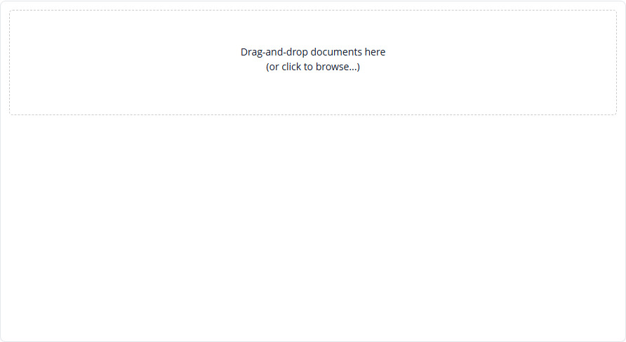
42 Step 6 — preview and submit for manager approval
- Review details, every date, assigned teams, target vendors, bid requirements, item schedule and uploaded files.
- Return to a previous step to correct any field. Leave Submit for Procurement Manager Approval selected when ready.
- Click the final Save Tender button and wait for the success message.
- Return to Procurement Inbox and inspect Tender Status and Manager Approval separately.
- A draft saved without submission remains a draft. Open it again and select the approval option to submit when ready.
A submitted tender remains unpublished while Manager Approval is Pending.
Remember: Tender Status may still say Draft while Manager Approval says Pending. This is the expected pre-publication state. Do not judge approval routing from the Draft label alone.
Team test: Save without approval submission; then submit and verify the separate manager account receives it.
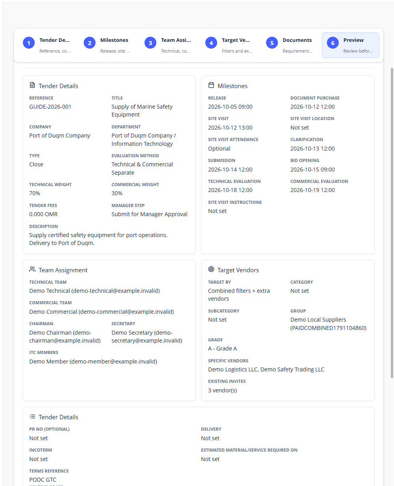
43 Procurement Manager — approve, return or reject
- Open the Pending tender and read details, dates, documents, audience, requirements and teams.
- Use Approve when ready. For a published change, review the proposed change before applying it.
- Use Return for Update with a specific comment when procurement must revise the tender.
- Use Reject request with a reason for a rejected approval request.
- Confirm the decision and ask procurement to check the corresponding manager status/message.
Approval authorises the next step; a revision sends the tender back to procurement with the comment.
Remember: Manager approval does not itself publish a new draft. Procurement must perform publication. Initial approval, update approval and cancellation approval are different request types.
Team test: Run one approval and one return/revise/resubmit path using separate users.
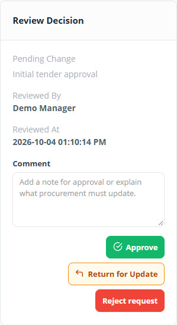
44 Publish an approved tender
- Check Manager Approval is Approved and the tender setup is complete.
- Use Publish on the tender row, or the Publish After Manager Approval option when shown in the approved tender form.
- Confirm Tender Status becomes Published.
- Sign in as an eligible vendor and check availability after the release time. Check a closed tender’s invitation against the correct CR.
Eligible vendors can view the published tender during its permitted period.
Team test: Try publication while manager approval is pending and confirm it is refused. Check a future release is not prematurely open.
45 Change or extend tender dates after publication
- Open the correct tender and choose Edit Schedule or its edit action.
- Open Milestones and amend the intended date/time. Review all subsequent dates, including any automatic shifts after closing changes.
- Review the remaining wizard steps and Preview. Submit Change for Procurement Manager Approval and save.
- The manager reviews and approves the proposed update. Until approval, the existing published dates remain in effect.
- After approval, confirm the new dates in the register and vendor portal and check the schedule update communication/history.
Approved date changes become effective with a recorded old/new schedule.
Remember: Awarded/cancelled tenders cannot be edited as normal active tenders. A pending schedule request is not a deadline extension until approved.
Team test: Propose an extension and compare vendor dates before and after manager approval. Try an invalid sequence and confirm it is rejected.
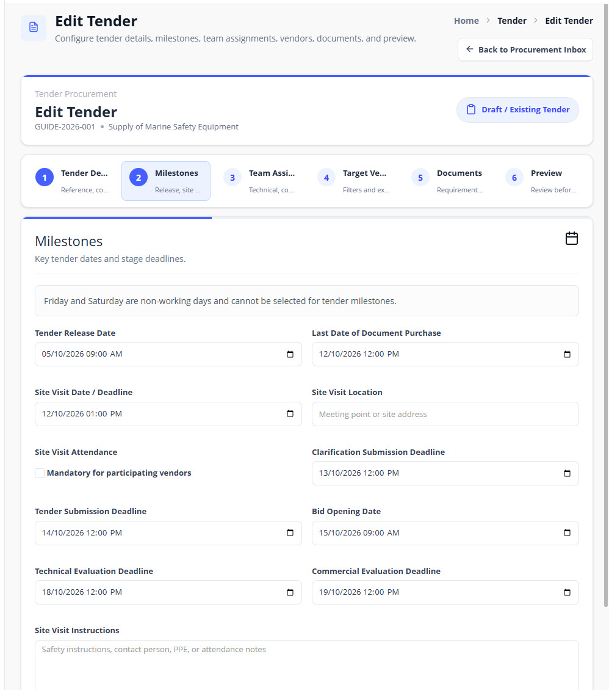
46 Vendor — find a tender, pay its fee and request participation
- Check the selected CR, tender title/reference and schedule.
- Review Overview, Tender Details and available Tender Documents.
- If a tender fee is required, use Pay Tender Fee before the purchase deadline and complete the approved bank checkout.
- If Request procurement approval is shown, submit that request and wait for procurement’s decision.
- When the fee/participation requirements are satisfied and bidding is open, the Bid Submission form becomes available.
Only an eligible approved vendor can move to bid submission under the tender’s requirements.
Remember: Vendor registration payment and an individual tender fee are separate transactions. An invitation or fee payment alone does not replace a participation approval that the page still requires.
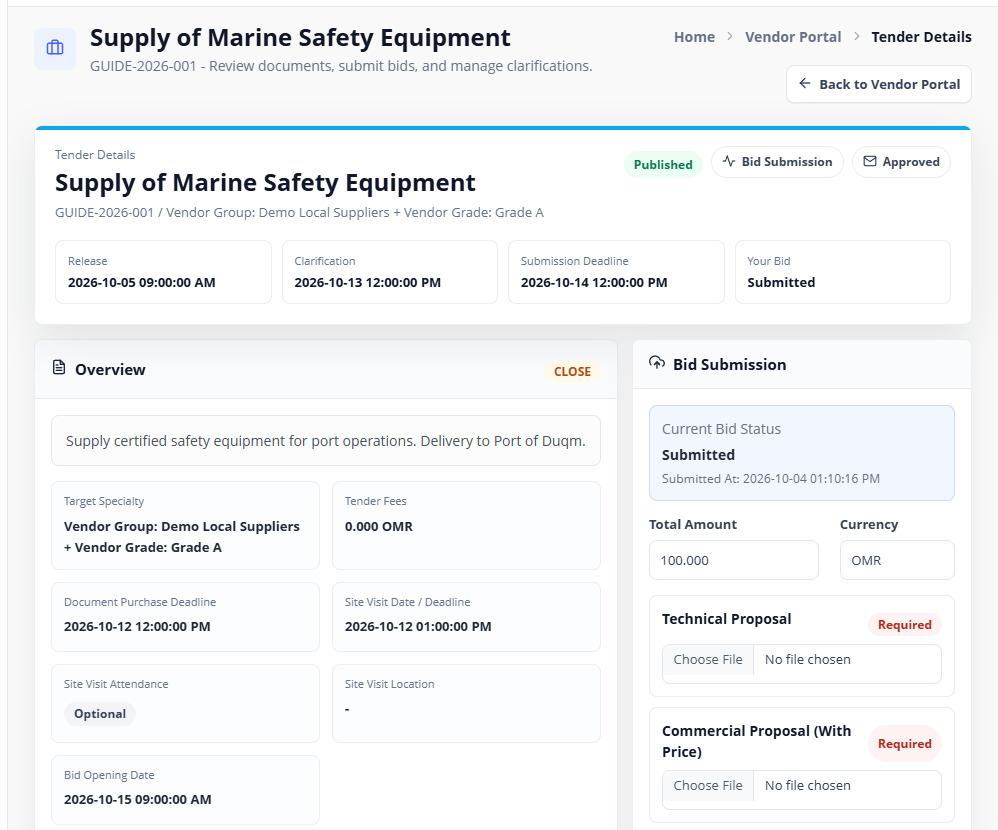
47 Procurement — approve vendor participation
- Open the relevant tender and select Vendors.
- Find the vendor with pending procurement participation approval and check its CR, fee and eligibility.
- Use the available Approve or Reject action. Enter the reason requested for rejection.
- Ask the vendor to refresh that tender and confirm its approval/status and bid availability.
Participation decisions apply only to the reviewed vendor/tender.
Team test: Approve one vendor and reject another; confirm neither decision changes unrelated vendors or another CR.
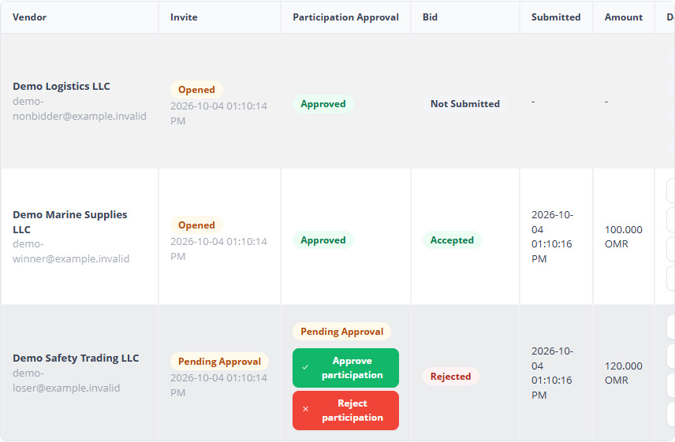
48 Vendor — submit or update the full bid
- Confirm bidding is open and all fee/participation requirements shown on the page are satisfied.
- Enter Total Amount and Currency, or fill each vendor unit price when the tender contains item pricing. Review computed line totals and the grand total.
- Upload every Required proposal section. Keep priced and unpriced commercial files in their correct fields.
- Click Submit Bid. Check the confirmation and submitted status/time.
- For changes before closing, use Update Bid and replace the intended file(s). Check the Current file/download links.
- After closing, ordinary bid submission/update is unavailable; contact procurement if a formal clarification is requested.
The bid is submitted for the correct CR with its amount, item prices and required documents.
Team test: Try missing technical/commercial files, a valid full submission and an update before closing. Confirm no update is accepted after closing.
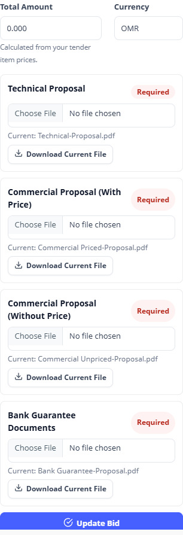
49 Vendor — send a question to procurement
- Select Clarification Type: General/Procurement, Technical or Commercial as appropriate.
- Write a clear question referring to the tender item/document.
- Attach supporting files using Attach Files when needed.
- Click Submit Clarification before the ordinary clarification deadline.
- Read the reply thread and attachments when procurement responds.
The question goes through procurement, including questions intended for the technical or commercial team.
Remember: An evaluation-stage question relayed by procurement may allow a targeted late response even after ordinary questions close. That exception does not reopen bidding or permit unrelated vendors to ask late questions.
Team test: Send General, Technical and Commercial questions with attachments. Confirm internal evaluator messages are not visible before procurement shares a reply.
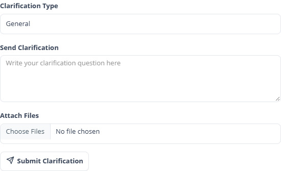
50 Procurement — reply, forward or publish to all vendors
- Open the vendor chat and select the correct Related Thread.
- Choose the Clarification Type and Visibility.
- Select Reply to this vendor for a private answer; Forward internally to technical team or commercial team for expert input; Publish to all vendors for a shared answer.
- Write the message, attach files and click Send Reply.
- Check the resulting thread and ask the intended recipient to verify the message/attachment.
The selected visibility controls who receives the message and attached files.
Remember: Review a private vendor attachment before forwarding or publishing it. Internal forwarding/replies stay internal until procurement explicitly shares a vendor-visible response.
Team test: Send one private reply and one public reply. Check another vendor sees only the public one; check commercial-only internal attachments remain unavailable to the technical team.
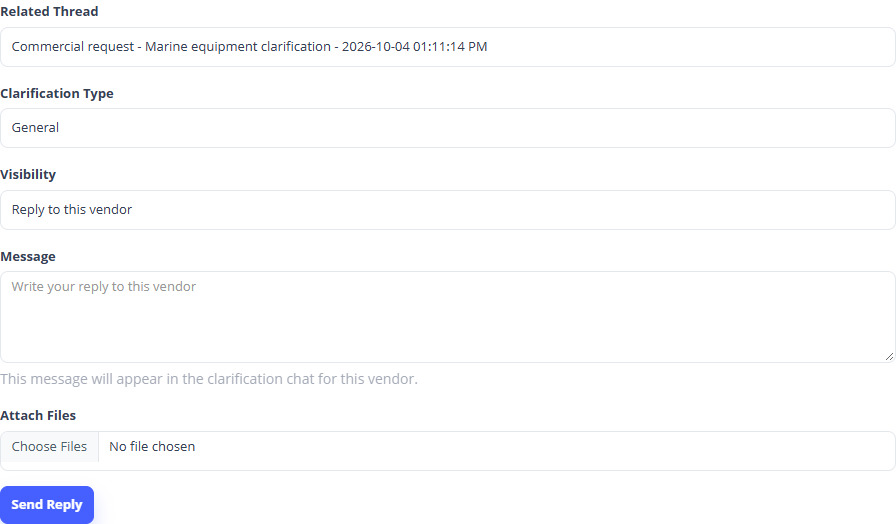
51 Technical/commercial team — respond through procurement
- Open the tender’s team clarification inbox/thread or the relevant bid’s evaluation screen.
- Read the question forwarded by procurement and open the permitted attachments.
- Reply internally to procurement with the answer and any supporting files.
- For a new evaluator question, use the message/request clarification form. Identify the vendor/bid when the question is specific.
- Procurement decides whether to relay the answer privately, publish it to eligible vendors or ask the vendor for further information.
Procurement remains between vendors and evaluator teams.
Remember: General evaluator messages belong to the tender; bid-specific requests refer to that vendor. Neither becomes vendor-visible automatically.
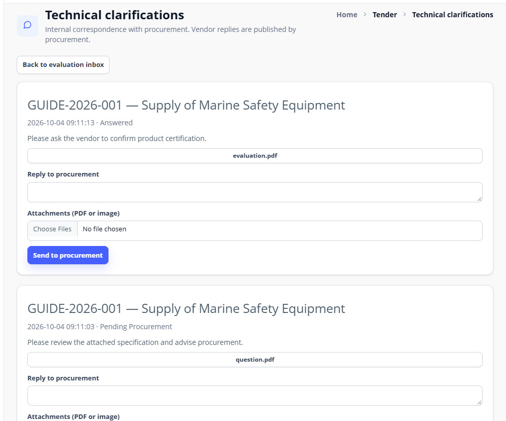
52 Publish an announcement, circular or tender group update
- Choose the displayed Update Type, such as an announcement/circular.
- Enter a clear Subject and Message describing the update.
- Attach the relevant supporting file(s).
- Publish the update and check it in the communications list and an eligible vendor’s tender page.
The tender’s permitted vendor audience can read the published update and attachment.
Remember: To address only one vendor, use its clarification chat and private visibility. Publishing a message about a new deadline does not replace the formal Edit Schedule approval process.
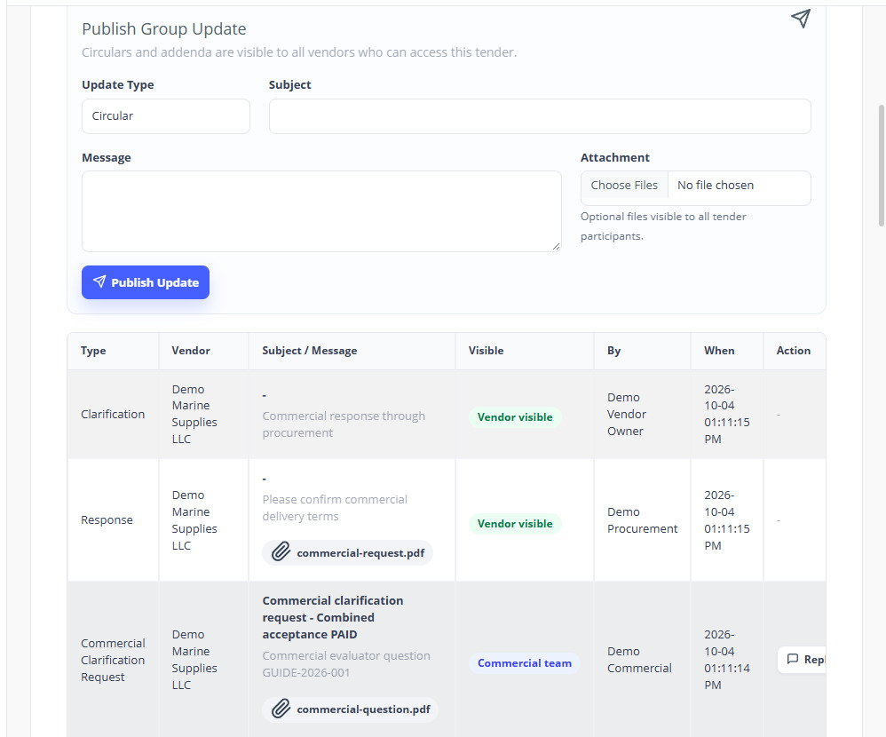
53 Check the tender is ready for Bid Opening
- Wait until bid submission has closed and the scheduled opening time has arrived.
- Confirm the tender is Closed and its Workflow Stage is Bid Opening.
- Confirm Chairman, Secretary and Member are three different assigned users who can sign in.
- Open the tender’s opening action in Bid Opening Inbox.
The committee can begin the opening session for the correct closed tender.
Remember: There is one three-key bid opening for the full package. Technical evaluators still see technical material only at their review stage; committee opening access does not remove evaluator restrictions.
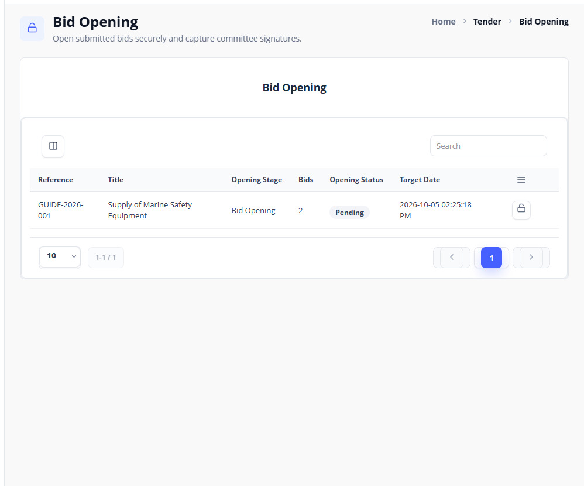
54 Generate the three role codes
- Check the reference/title and your assigned opening role.
- Click Generate 3-Key Codes if no active session exists.
- Note the displayed expiry time and coordinate the three people to confirm within it.
- Each member opens their own session/account to retrieve only their assigned role code.
A protected opening session holds separate Chairman, Secretary and Member codes.
Remember: Opening codes have a five-minute validity in the current implementation. Regeneration is restricted after a confirmation attempt or unlock. If expired/unavailable, report the tender reference and contact an authorised committee administrator; do not guess repeatedly.
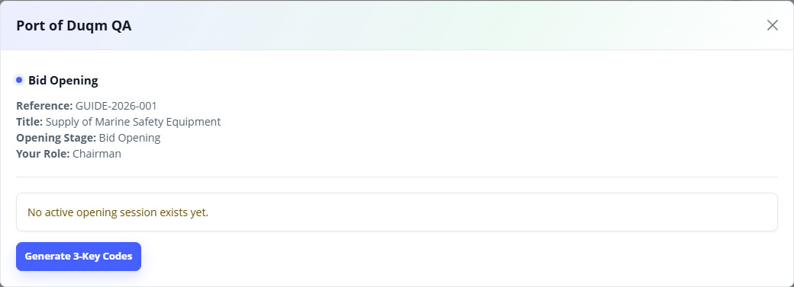
55 Each person confirms only their own role code
- Sign in to your own account and open the correct tender’s opening action.
- Read Your Role and Your assigned role code.
- Enter that six-digit code in Confirm your assigned role code and click Confirm My Code.
- Check that your role now shows confirmed. The first two people wait for the remaining role(s).
- After all three different roles confirm, the bids unlock and the full committee package becomes available.
All three authorised confirmations are required before unlocking.
Remember: The code shown in this guide is a short-lived sample from the test copy. Use the code shown in your own current session. Do not share sign-in passwords or try another person’s code.
Team test: Confirm only two roles and check bids stay locked; confirm the third and check unlock. Test an unassigned user and an expired code in designated test records.
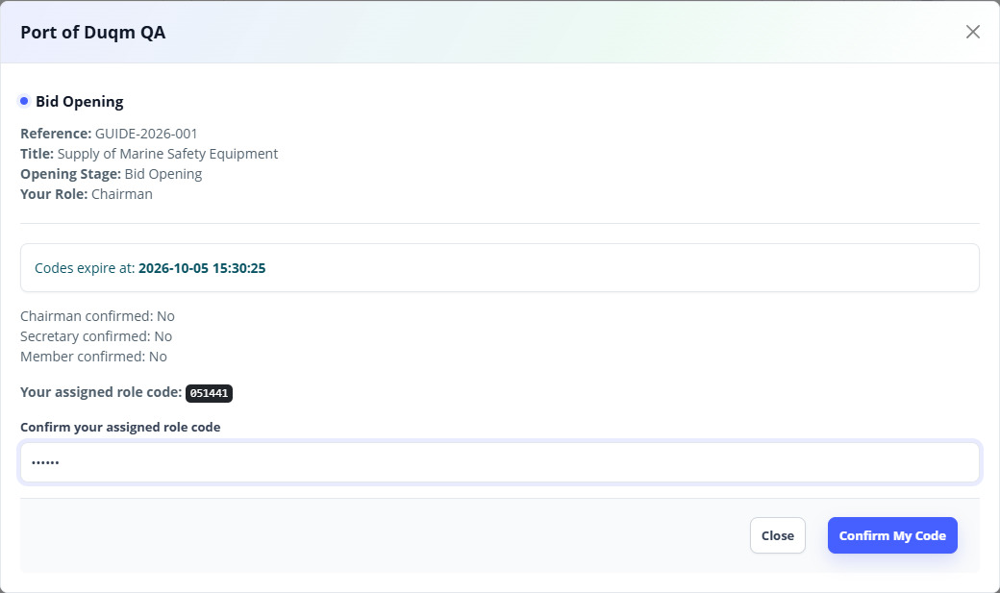
56 Review the opened package and sign digitally
- Review every submitted vendor and the permitted technical, commercial and bank guarantee files.
- Check the bid amounts, submitted information and package summary.
- Enter Signature Name and draw your signature in the pad.
- Select the confirmation checkbox and click Sign Bid Opening.
- Each of the three people repeats this using their own account. Check Chairman, Secretary and Member all show Signed.
The opening form records the three reviewers’ signatures and the completed opening state.
Remember: Code confirmation and signature are separate actions. Bids can be unlocked while signatures are still pending; procurement cannot start normal technical review until the signature/form requirement is satisfied.
57 Print the official Bid Opening Record
- Open Bid Opening Form after the permitted opening state is reached.
- Check reference, company, vendors, bid values, sections and signatures.
- Use the PDF/print action to open the supplied Port of Duqm Bid Opening Record layout.
- Print or save the PDF and check that all vendors and any continuation pages are included.
The committee/procurement has a readable record in the approved template layout.
Team test: Print a tender with several bidders; check draft/non-submitted bids are not represented as submitted bids.
58 Procurement — check proposals and start technical review
- Confirm all three signatures are complete and download/check the generated bid opening form.
- Review the opened technical and commercial proposal package for completeness.
- Select the generated-form confirmation checkbox and enter any Procurement Review Note.
- Set the Technical Review Open Until date/time when requested and click Start Technical Review.
- If an approved manual signed form is used as a fallback, upload it using the separate Manual Signed Bid Opening Form action and check acceptance first.
The recorded procurement handover allows technical evaluators to begin.
Remember: A workflow date alone does not replace this procurement review gate. The manual signed form is a documented fallback, not an instruction to skip committee review.
59 Technical evaluation — score, findings and decision
- Open the tender and choose a bid in Bids Pending Your Action.
- Preview/download the Technical Proposal and inspect supporting clarification replies.
- Score every displayed criterion from zero up to its Weight; add criterion comments as needed.
- Choose Technical Accepted or Technical Rejected. Enter an evaluation comment and upload Technical Findings Documents when appropriate.
- Click Save Evaluation and check My Finalized Decisions. Repeat for all assigned bids.
- Use the question-to-procurement form for further clarification rather than emailing a vendor outside the recorded workflow.
The technical outcome and score are recorded; commercial prices stay outside the technical review screen.
Remember: Another evaluator’s finalized bid may be read-only. Your own finalized evaluation may remain editable when the current stage permits it. Do not assume every person can overwrite another evaluator’s decision.
Team test: Try a score above its criterion weight; check refusal. Verify technical users cannot open priced commercial files directly.
60 Commercial evaluation — review pricing and choose the outcome
- Open the tender when the Commercial stage is available and review technically eligible bids.
- Review the permitted proposal documents, item prices, quantities, totals and commercial clarification replies.
- Enter the Commercial Score shown by the form within its allowed range, and choose Commercial Approved or Commercial Rejected.
- Add the commercial evaluation comment/findings and save.
- Complete the remaining eligible bids. Check the intended selected bidder and avoid selecting more than one commercial approved winner.
The commercial outcome and weighted ranking support the final award decision.
Remember: Commercial approval is not final tender award. Procurement must finalise the tender afterward. Different evaluation methods/weights affect the displayed ranking.
Team test: Check score limits, one selected bidder and one rejected bidder. Confirm an early commercial action before its stage is refused.
61 Review late evaluations before awarding
- Review the technical/commercial summaries and any Late / Pending review indicators.
- Open the evaluation and assess why it was submitted after its deadline.
- Use the available late review accept/approve or reject action and enter any requested reason.
- Check that the pending late review has a recorded decision before final award.
Unreviewed late decisions do not silently become a final award basis.
Team test: Use a designated late evaluation and confirm award is refused until procurement records the required decision.
62 Finalise the tender award
- Check the tender is at Award Decision, its evaluations are complete and one intended commercial approved vendor is selected.
- Review any late evaluations, bid documents and the result details in Tender Register.
- Use Award and confirm the finalisation prompt.
- Check Tender Status becomes Awarded and the selected vendor is correct.
- Check the result letters and email delivery summary. Final award is a final action; do not repeat it to resend an email.
The winning bidder receives an award result; unsuccessful actual bidders receive regret results.
Remember: Award/refusal checks remain active even for administrators. A result-email failure does not erase an already recorded portal result.
Team test: Attempt award too early and with pending late review. After a valid award, repeat the action and confirm no duplicate result letters are created.
63 Successful vendor — view the award letter
- Open the awarded tender for the correct CR.
- Read the successful bid message and the result details.
- Click View / print result letter.
- Check company name, tender reference, title and award details, then use Print / Save as PDF.
The winning bidder can retain its own letter of award.
Team test: Check another vendor’s login cannot retrieve the winner’s letter by changing the URL.
64 Unsuccessful bidder — regret letter and email delivery
- The unsuccessful actual bidder opens the awarded tender and reads the outcome.
- Use View / print result letter to obtain the personalised regret PDF in the supplied template.
- Check the bidder name, tender reference/title and the letter wording.
- Procurement checks the result-email status. If a delivery failed, use Retry failed result emails after the email issue is corrected.
- Check the unsuccessful bidder’s inbox for the email and attached PDF; a stored letter alone does not confirm email arrival.
Each unsuccessful actual bidder has its own regret letter; failed email delivery is visible and retryable.
Remember: An invited vendor who never submitted an actual bid does not receive a losing-bidder regret letter. Successful emails are not resent by the failed-only retry action.
Team test: Check one winner, one unsuccessful bidder and one invited non-bidder. Verify the correct letter/email recipient for each.
65 Use the Tender Register and audit tabs
- Search/filter tenders by reference and the available status/stage/company/date controls.
- Use Overview for main facts and key dates; Tender Details for the item/terms schedule; Timeline for milestones.
- Use Vendors for invitations, fee/participation and submitted bids; Evaluations for scores, findings and ranking.
- Use Communications for messages/announcements and Documents & Audit for documents, extensions, workflow history and opening audit.
- Use Edit Schedule and Bid Opening Form only when your role and the tender state allow them.
The team can trace a tender from its source through approval, changes, opening and award.
66 Cancel a tender through manager approval
- Review the tender and confirm cancellation is the intended business decision.
- Use the cancellation action and confirm submission to the Procurement Manager.
- The manager reviews the cancellation request and approves or returns/rejects it as appropriate.
- Check the final tender status after the manager decision and the vendor-visible outcome.
The cancellation is applied only through its required manager approval.
Remember: Do not use cancellation as a substitute for correcting a missing file, a failed email or a payment return. Finalised tenders have state-specific restrictions.
67 Retender and formal workflow reopening
- For a retender, use Retender on the eligible source tender and open the new draft.
- Review copied details, teams, audience and requirements. Enter a complete new valid schedule; do not assume the source deadlines remain suitable.
- Submit the new draft for manager approval and publish it through the normal workflow.
- For an exceptional stage reopening, select the intended stage, Stage Open Until and reason in Workflow Stage Control, then submit the request.
- Obtain the manager decision and confirm the effective stage/time before telling users to act again.
A retender is a new approved tender; an exceptional reopening is recorded and approved.
Remember: Reopening is an authorised exception, not the normal way to advance the tender. It does not eliminate role, payment, participation, bid-opening or procurement review checks. Cancelled tenders cannot be reopened by the workflow override.
68 Tender payment accounting
- Find the tender fee transaction by vendor/CR, tender/reference and the available filters.
- Open details and confirm the payer, tender fee purpose, amount/currency, transaction status and bank references.
- Compare the accounting outcome with the vendor’s fee state for that tender.
- Export/recheck using the permitted actions when needed; investigate an existing charged/pending transaction before a new payment.
Tender fee payments can be cross-referenced independently of vendor registration fees.
69 Read statuses and respond to common problems
- If a button is missing, check the role, selected CR/company, assignment and current workflow stage.
- If a vendor cannot participate, check registration, company approval/expiry/block status, invitation, tender fee, participation decision and date windows.
- If a tender still says Draft, read Manager Approval. Pending approval is expected before publication; a saved-only draft needs submission.
- If Bid Opening is unavailable, check closing/opening time, committee assignment, code expiry and whether another role still has to confirm/sign.
- If an attachment does not open, report its reference/type and error; do not assume a successful upload proves it can be read.
- If payment/SMS/email fails, record its displayed status/reference and report delivery separately from the saved application result.
The report identifies the failed stage without guessing that the entire workflow was bypassed.
| Visible state | Meaning / next action |
|---|---|
| Registration payment required | Pending; complete verified registration payment |
| Pending waiver approval | Pending; wait for Riyadha review |
| Profile pending review / update pending | Reviewer must decide the submitted profile/change |
| Draft + manager Pending | Unpublished tender awaiting Procurement Manager |
| Draft + manager Approved | Procurement may publish |
| Published / Bidding | Eligible vendors act within release/deadline windows |
| Closed / Bid Opening | Submission ended; committee opening next |
| Unlocked, signatures pending | Review and sign with all three committee roles |
| Technical / Commercial | Assigned team performs the relevant evaluation |
| Award Decision | Procurement reviews readiness and finalises award |
| Awarded / Cancelled | Final business state; normal edit actions are restricted |
70 Run one full team acceptance test
- Register one paid vendor, one waived vendor and a separate waiver applicant asked to pay. Complete the correct documents and check the limited/full access boundaries.
- Complete the profiles, add contacts, review updates and check email/CR/multi-CR sign-in with the required OTP policy.
- Create one direct tender and one department request-route tender. Return one for revision, then approve and publish.
- Check closed-tender filters and extra invitees; pay any authorised test tender fee and approve participation where required.
- Exchange private, public, technical and commercial clarifications with attachments. Submit at least two full bids and check deadline restrictions.
- Complete three different committee confirmations/signatures, print the opening record, then hand over to technical/commercial evaluation.
- Review any late decisions, award one bidder and verify award/regret letters plus actual delivery statuses.
- Record Passed, Failed, Blocked or Not tested for every checklist row. Send the completed checklist and issue screenshots to the coordinator.
The team has an auditable full workflow result and a precise list of problems to report.
Remember: These are acceptance instructions for the team. This document itself is not a certificate that every live scenario has passed. Use designated test accounts/tenders and the organisation’s approved test payment process.
71 What to include when reporting an issue
- Record the affected module, page name, tender/vendor/CR reference, user role and the date/time.
- List the exact actions in order and what you expected.
- Copy the visible error text and describe what actually happened. Include a screenshot showing the affected control/state.
- For payment or delivery issues, include the application transaction/message reference and status. Do not include passwords, OTP codes or full card details.
- Mark the relevant checklist row Failed or Blocked. Keep the original test record available for investigation.
The support team can reproduce and locate the problem quickly.
All captured screens and sample forms (94)


Page directory
Use these paths on your own portal domain. Access still requires the assigned permissions.
| Sign in | /index.php/signin |
| Vendor registration | /index.php/guest_vendor |
| Vendor Portal | /index.php/vendor_portal |
| Vendor groups | /index.php/vendor_groups |
| Vendor group fees | /index.php/vendor_group_fees |
| Vendor document types | /index.php/vendor_document_types |
| Vendors master | /index.php/vendors |
| Vendor update requests | /index.php/vendor_update_requests |
| Vendor accounting | /index.php/payment_accounting/index/vendor |
| Tender Requests | /index.php/tender_requests |
| Department Manager Inbox | /index.php/tender_department_manager_inbox |
| Finance Inbox | /index.php/tender_finance_inbox |
| Committee request Inbox | /index.php/tender_committee_inbox |
| Procurement Inbox | /index.php/tender_procurement_inbox |
| New Tender | /index.php/tender_procurement_inbox/form |
| Procurement Manager Inbox | /index.php/tender_procurement_manager_inbox |
| Tender Register | /index.php/tender_reports |
| Procurement Clarifications | /index.php/tender_clarifications |
| Bid Opening Inbox | /index.php/tender_committee_opening_inbox |
| Technical Inbox | /index.php/tender_technical_inbox |
| Commercial Inbox | /index.php/tender_commercial_inbox |
| Team Clarifications | /index.php/tender_team_clarifications |
| Tender accounting | /index.php/payment_accounting/index/tender |